MIL MIL 76 - ZERO% igiene personale
Mil Mil è un'azienda italiana, precisamente situata a Novara, si è da subito occupata dell'igiene personale con i migliori prodotti di qualità.
Ovviamente l'azienda si impegna per il rispetto dell'ambiente. Infatti ha già, dal 1999, introdotto la tecnologia della preforma del PET.
Cos'è?
In pratica consiste nel ridurre in modo sensibile le emissioni di CO2.
La linea che vi presento oggi è MIL MIL ZERO%.
MASCHERA NERA: EFFETTO INTENSIVO – DETOX CARBON MASK
- RIMUOVE IMPURITA’
- PUNTI NERI
- SEBO IN ECCESSO La sua formula, arricchita con carbone vegetale ed estratti di malva, garantisce un effetto purificante e una pulizia profonda.
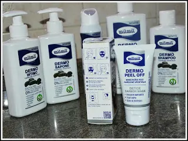
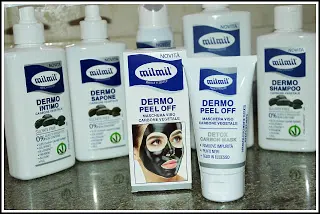
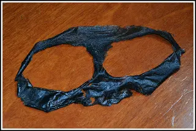
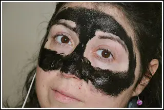
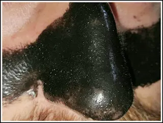
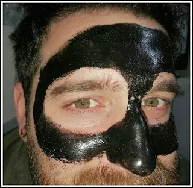
DERMO BAGNO Grazie al carbone vegetale al suo interno, è adatto sia ad adulti che bambini. Aiuta a purificare tutta la pelle lasciandola morbida e levigata.
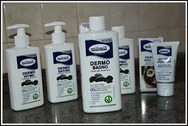
DERMO INTIMO È a base di ingredienti naturali che prevengono infezioni e pruriti intimi essendo delicato e profumato per una corretta salute intima.
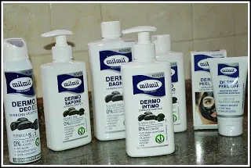
DERMO DEO Il deodorante formulato con Micro particelle ultra - assorbenti di carbone vegetale. Regala freschezza in un delicato profumo tutto il giorno tutti i giorni fino a 48 ore.
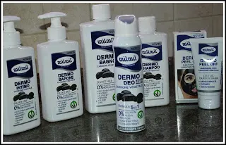
DERMO SHAMPOO Privo di tutte le sostanze chimiche, il fermo shampoo di Mil Mil dona morbidezza ai nostri capelli in perfetta armonia con la natura.
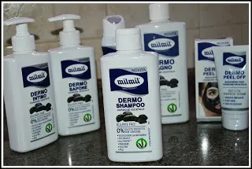
DERMO SAPONE anch'esso formulato con carbone vegetale che deterge in profondità le mani e il viso lasciando la pelle vellutata e morbida.
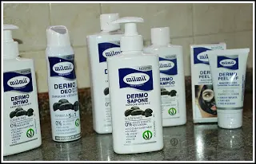
Tutti i prodotti al carbone vegetali sono stati clinicamente testati mediante un test ipoallergenici per ridurre il rischio di allergie.
Un prodotto naturale privo dalle sostanze chimiche. Inutile dire che tutti i prodotti sono privi di para-beni, siliconi, coloranti, alcool e peg.
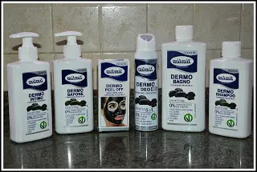
La MIL MIL non tratta solo questa linea, ma bensì altre 10 linee che più si adattano alle vostre esigenze.
Vi consiglio dunque di visitare: